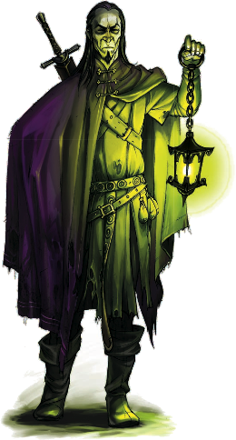
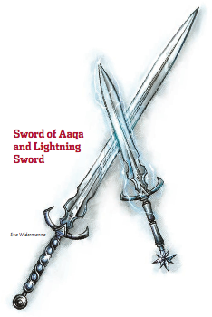

Week 31 - Kill ‘em all, and let the gods sort them out
I rushed through the adventure on the night, kind of keen to get it done. This description will be a little rushed, too.
 Our intrepid heoes proceeded down the chasm, spider climbing and wind walking, avoiding having to make any climb checks. At the base of the cavern is a massive chamber. Jericho investigates, and sees a man absorbed in examining something on his lap, the whole scene lit by a sickly green glow from a strange lantern.
The party approch, and Moreto hails them couteously, but Flash begins spellcasting. Here in Khyber, there is little trust between strangers, and the battle commences. The party overcome and slay Moreto (who transforms into a Spectre at death and level-drains Gauthakan) and his pet Morghs, and loot his stuff.
He had some nice gear which I failed to make use of during the battle. Drat.
Moreto was examining some sort of large circular object made of quartz - an onbect exactly the same size as that undusty curcle in the wraith’s room. Flash begins to examine it with his monocle, but as soon as he touches it, a pair of Djinni materialise and attack.
The party deals with them, and Flash determines uses his facility with magic devices to persuade the object that he is a lawful air elemental. Having done this, he can handle it without harm.
The river leads off further into the trackless depths of Khyber, so the party elect to proceed back up the fissure, and perhaps find a lock for their key. As they pass a particlar rock feature which they did not notice previously, Flash’s attention is drawn to it. Behind it, a hidden flight of stairs leads up.
At the top of the stairs are a pair of massive doors - stone sheathed in adamantine. They radiate a pwerful aura, which overcomes Jericho who cannot then bring himself to approach them.
The party ponder, for a bit, how to go about openeing the massive doors. No - actually they ponder the total value of the adamantine in which the doors are sheathed. Then they ponder how to get them open. Eventually, they decide to do it the easy way, and have Gauthakan batter a hole in them. It takes a while, but eventually - eventually - the doors are dealt with.
These creatures in a matter of seconds nearly kill Flash (reducing him to -8). Frith dismisses the wind-walking spell on Flash, and he gradually drifts down to the distant floor of the room with his ring of Feather Fall, which somehow activates. Jericho leaps down to intercept him.
Meanwhile, Gauthakan engages the elementals. It is a hard fight. Gradually they wear him down, as Jericho intercepts Flash and forces a curative potion down his throat, and they each secure a hold on the nearby wall and begin the labourious task of climbing back up. But Gauthakan is eventually victorious.
After that near-disaster, the party elect to rest and recover their strength, as Frith tends to their many injuries and beseeches his gods for a few Dismissal spells.
Next day, Jericho with the aid of Flash's Spider Climb spell investigates the chamber. One of the pillars has a circular dpression on top, obviouslyy designed to fit the seal they fond on Moreto's body. He places the seal in its place, and is carried up towards the ceiling whic, it is now obvious, is illusionary in this spot.
The walls are carved to depict a funeral procession that winds up in a spiral, showing Wind Dukes, djinni, air elementals, and other elemental servants of Law in mourning as they attend the body of a fallen general. After the first spiral, the upper sections show the general’s ascension into a primal vortex of wind and thunder. Many-eyed abominations, frog-like humanoids, and tentacled demons are trampled beneath his feet as he rises into a golden doorway at the end of the fresco.
It attacks Jericho with its eye beams, and Jericho is forced to flee. The party arrive in the chamber one by one to engage te monster. first Gauthakan, then Frith, Then Flash and Jericho. They are blasted with eye beams and attacked physically. Frith attempts three times to dismiss the monster, but for naught. Eventually, after another hard fight their combined spells and strenght bring it low.
And finally, there is only the sarcophagus. The true resting place of Icosiol, wandering duke, wind duke of Aaqua, bearer of the Staff of Law.
The party place the seal in its place, and the sarcophagus opens. Within the sarcophagus are treasures:
- A shortsword and a longsword, meant to be weilded together. 
- A ring, granting strange powers to the wearer.
- A fragment of the Staff of Law, also known as the Rod of Seven parts
All four of these objects are magic items of great power. If the PCs claim them, they feel a momentary rush of anger and jealousy, but this rush quickly gives way to a feeling of peace and welcome. The spirit of long-dead Wind Duke Icosiol can feel the impending doom that is the Age of Worms, and understands that the weapons of the Vaati must be used once again to fight against the encroaching dark. His blessing settles over the PCs with a soft sigh and a feeling of contentment and support.
The spirit of the ancient duke also grants other boons: the circlet that the party first found in the whispering cairn is unlocked, its powers greatly increase. And the ancient talisman of the sphere they also found there is reactivated.
The duke grants them a final boon: free passage through his tomb. No trap or guardian remaining will harm them as they leave. Then he departs.
Having, then, looted the ancient tomb and recovering the weapons of the Wind Duke, the party returns to Diamond Lake, where Allustan puts them on the next stage og their journey. Travel to Mageport, the home of his old master, the archmage Manzorian.
And that's it. What will Manzorian have to say? I wonder.